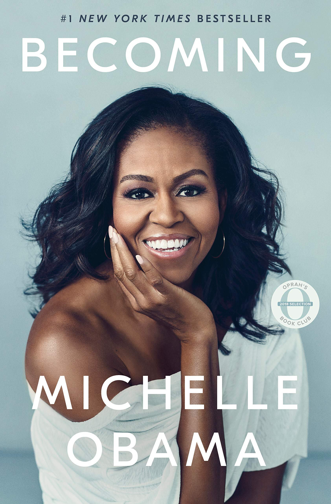
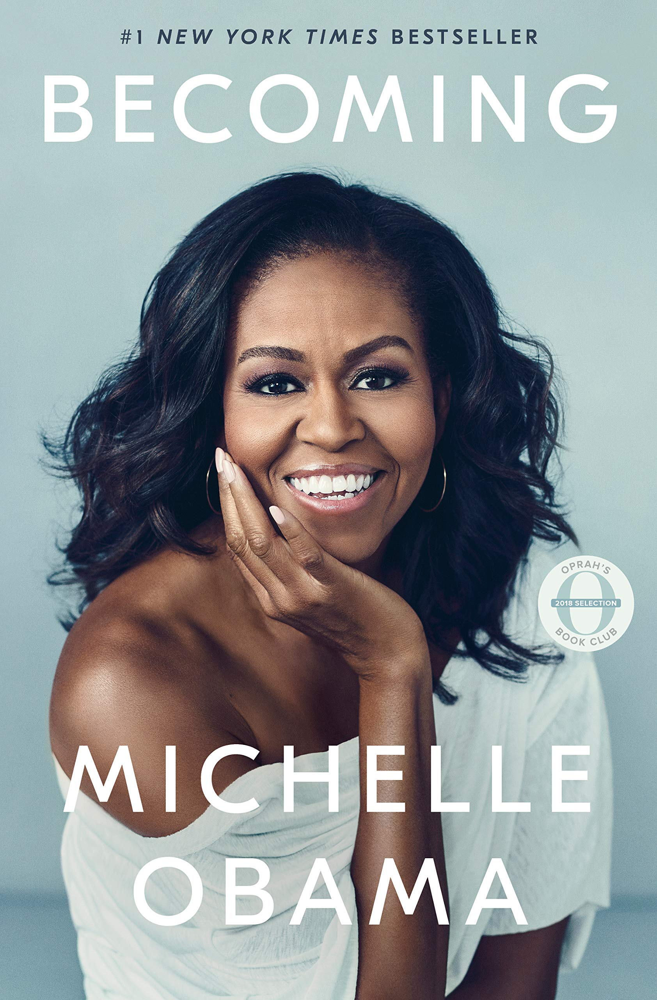

Books
I love to read but I haven't been able to find much time to since coming to college, but I'm trying to change that.
This year I'm doing a challenge where I try to read 25 books.
Some of my favorite books from last year:


The books I read so far this year:

Here are the next one's I plan to read:


 

Feel free to leave any suggestions down below: